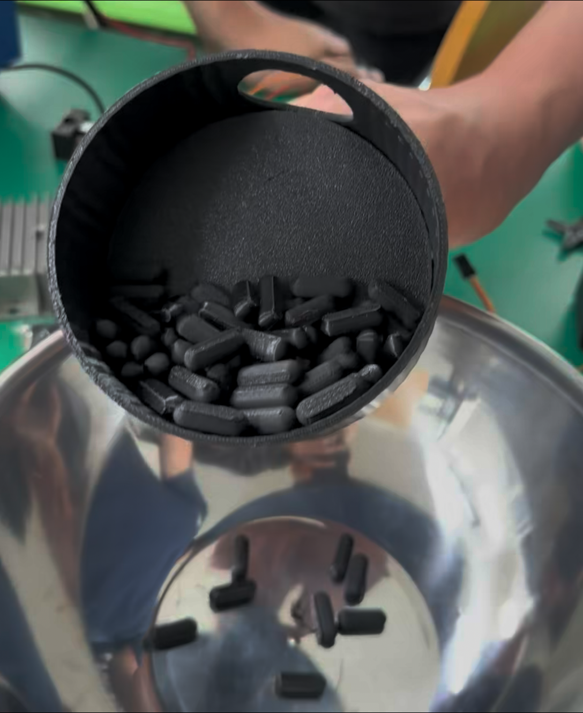
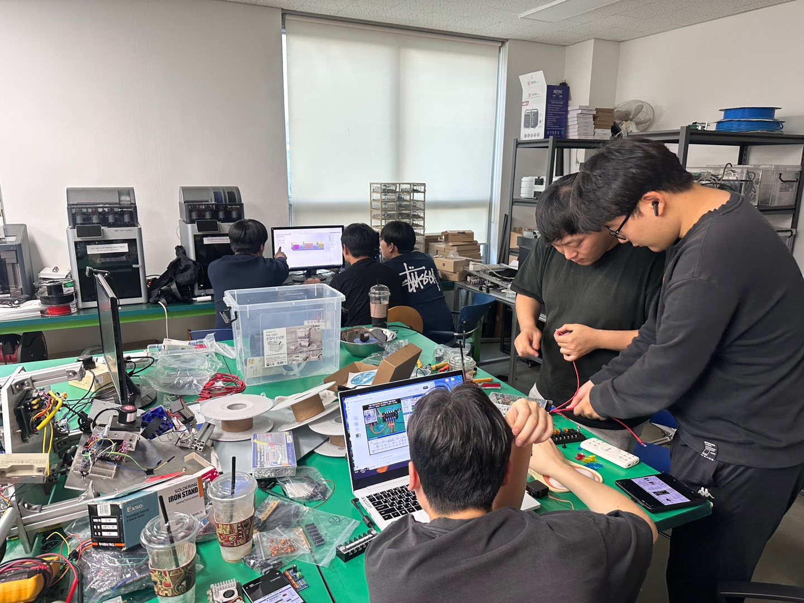
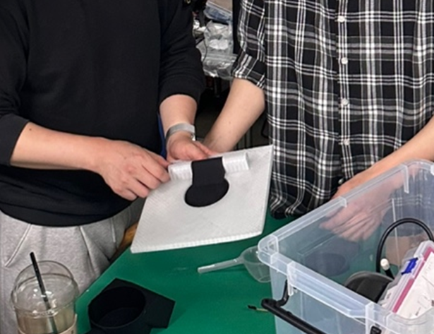
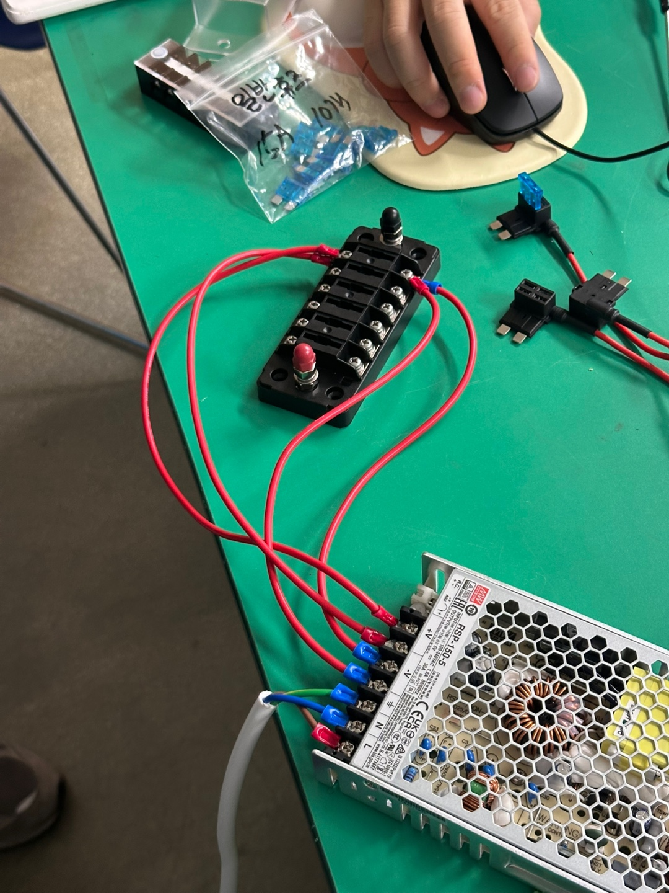
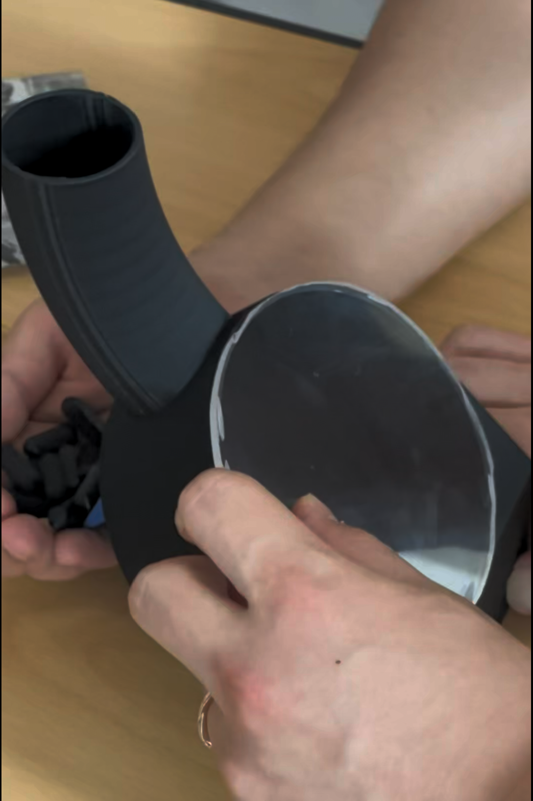
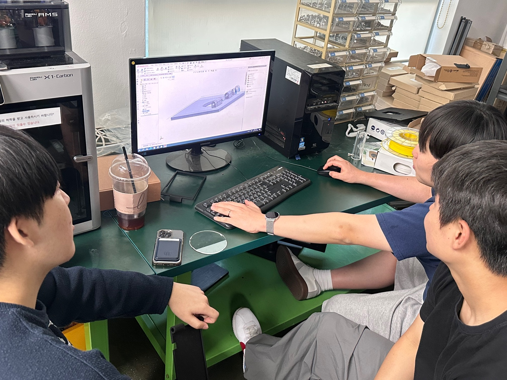
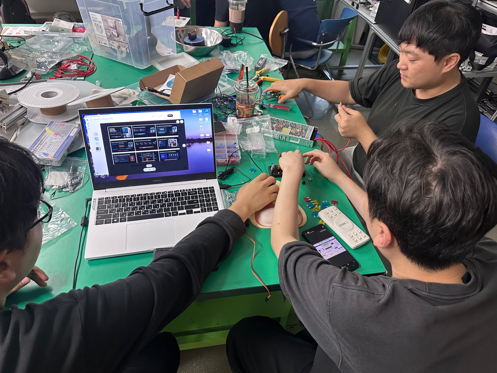

1알 정량 토출
회전 돌림판 + 토출구 정렬 구조로 정확한 배출
One Capsule at a Time
Raspberry Pi 5 기반 개인 맞춤형 영양제 자동 분배 시스템입니다. 회전 돌림판 구조로 영양제를 1알씩 토출하고, IR 센서와 SQLite 이력으로 결과를 확인하는 과정을 발표 현장에서 바로 보여줄 수 있도록 구성했습니다.

회전 돌림판 + 토출구 정렬 구조로 정확한 배출
IR 센서 감지와 Hall 예비 확장 기준 검증
SQLite 로컬 DB로 결과 저장과 추적
RPi5, PCA9685, 전원 분배 구조를 팀이 직접 시공
RSP-150-5와 퓨즈 분배로 부하별 보호 구성
Presentation Ready
현재 시점 기준으로 바로 시연 가능한 항목과 발표 현장에서 설명 가치가 높은 증빙 요소를 앞쪽에 배치했습니다.

회전 돌림판이 한 알을 포지셔닝하고, 토출구 정렬 후 정확히 1알을 배출하는 흐름을 보여줄 수 있습니다.
토출 시연 즉시 가능
Raspberry Pi 5, PCA9685, 서보, 퓨즈 분배 구조와 IR 감지 논리를 시각적으로 설명할 수 있습니다.
하드웨어 설명 준비 완료터치 UI와 배출 이력 기록을 함께 묶어, 사용자가 만나는 화면과 내부 데이터 흐름을 동시에 설명할 수 있습니다.
사용자 흐름 설명 가능Simulator Lab
기존의 단순 영상 탭 대신, 로터 회전, 센서 상태, 배출 큐, Validation Log, Jam Test까지 발표 중 직접 눌러볼 수 있는 별도 시뮬레이터 화면으로 교체했습니다.
Demo Proof
발표 현장에서는 구조 설명 뒤에 바로 실제 배출 영상을 보여주는 것이 가장 설득력이 큽니다. 토출, 감지, 기록의 순서를 한 번에 확인할 수 있도록 구성했습니다.
Execution Story
아이디어를 끝까지 실제로 밀어붙인 팀이라는 점이 이번 발표의 중요한 메시지입니다. 설계, 조립, 배선, 시뮬레이터, 문서화가 한 팀 안에서 연결되도록 구성했습니다.






핵심 기능은 모두 검증을 마친 상태로 정리하고, 발표 이후에 고도화할 부분은 별도 카드로 명확히 분리했습니다.
Roadmap
발표 이후에는 단기 피드백 반영부터 모바일 연동과 데이터 확장까지 단계적으로 고도화를 진행할 계획입니다.
피드백 수집 및 시연 정리
복약 이력 기반 추천 로직 시도
알림 및 원격 상태 확인 베타
로그 동기화와 대시보드 고도화
사용자별 복약 프로필 분리
통합 케이스와 안정성 마감
Presentation Links
시뮬레이터, GitHub 저장소, 프로젝트 자료를 통해 구조와 동작을 직접 확인할 수 있게 마무리했습니다.

실제 동작 시뮬레이터 확인

코드, 회로, 문서 전체 확인